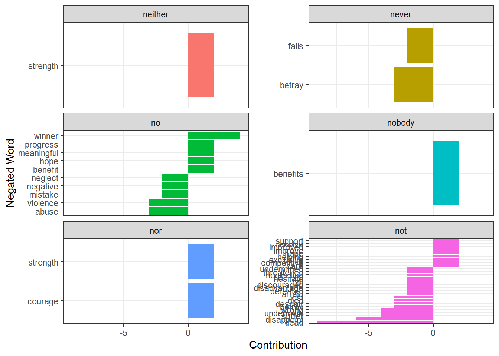
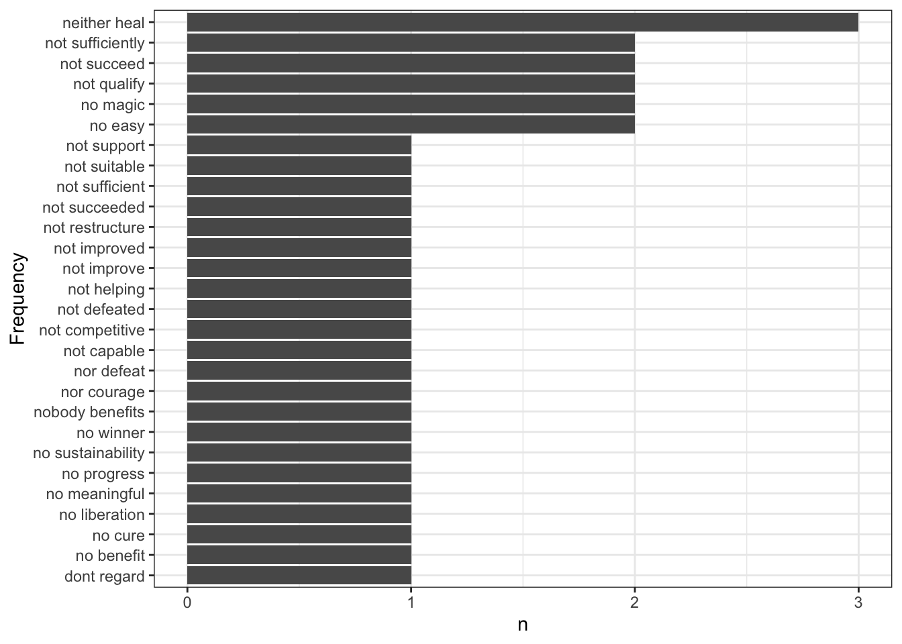

Joining with `by = join_by(word)`
Joining with `by = join_by(word)`
Joining with `by = join_by(word)`
# Sentiment over timesentiment_time <- uni %>%group_by(date, bing_sentiment) %>%summarize(n =n())
`summarise()` has grouped output by 'date'. You can override using the
`.groups` argument.
# Positive and negative sentiment over time.ggplot(filter(sentiment_time, bing_sentiment !='neutral'), aes(x = date, y = n, fill = bing_sentiment)) +geom_col() +theme_bw()
# A line graph depicting the rise and fall of possitive and negatice sentiment # over timesentiment_time %>%filter(bing_sentiment !='neutral') %>%ggplot(aes(x = date, y = freq, colour = bing_sentiment)) +geom_line() +geom_smooth(aes(colour = bing_sentiment))
`geom_smooth()` using method = 'loess' and formula = 'y ~ x'
# This line gives the sentiment of the statements over sentencessentiment_over_sentence <- uni %>%group_by(sentID) %>%summarize(net_sentiment = (sum(bing_sentiment =='positive') -sum(bing_sentiment =='negative')),month =first(date))# illustrates the sentiment over time and through their texts# If this was split up per speech it would show the change in sentiment throught the speech# This will look at the sentiment over sections of each presidents speeches going 20# sentences at a timenumber_of_sentences <-20sentiment_president <- uni %>%count(president, index = sentID %/% number_of_sentences, bing_sentiment) %>%pivot_wider(names_from = bing_sentiment, values_from = n, values_fill =0) %>%mutate(sentiment = positive - negative)ggplot(sentiment_president, aes(index, sentiment, fill = president)) +geom_col(show.legend =FALSE) +facet_wrap(~president, ncol =2, scales ="free_x") +theme_bw()
Bigrams
Sentiment analysis, with unigram tokens, can effectively capture the sentiment associated with a word. However, there are instances where negation words precede these sentiments. Negation words are words that reverse the sentiment of a succeeding word in sentiment analysis, essentially reversing its polarity (). In unigram-based sentiment analysis, it becomes necessary to account for this reversal in sentiment when negation words are present. Bigrams, which are pairs of consecutive words, prove to be valuable in investigating this phenomenon. Analyzing negation in conjunction with unigram sentiment helps assess whether some positive or negative sentiments might be incorrectly classified and whether the most frequently used positive/negative words truly represent a polar sentiment to the realization discussed.
The negation words used here have been drawn from the dictionary provided by (). It’s important to note that this list of negation words is not exhaustive, and this limitation could affect the outcomes of the analysis.
To facilitate this process, the text was tokenized into bigrams. Following this, the words were separated, which allowed for the removal of stop words from the text. Negation words were collected, to handle contractions within some of these negation words, apostrophes were removed. Given that many negation words were found among the stop words, these negation terms were excluded from the stop word dictionary. Subsequently, the stop words were filtered out from the bigrams, resulting in a filtered dataset used for the analysis of bigram sentiment.
In cases where a bigram contained a negation word as the first of the two words, the sentiment was reversed. Afterward, an overall sentiment score was computed for each bigram to determine the sentiment associated with it.
# Tokenize into bigrambigram <- speechSentences %>%unnest_tokens(word, sentences, token ='ngrams', n =2)# Collect some negation words from qdap dictionarynegation_words <- qdapDictionaries::negation.wordsclean <-function(x){ hold <-str_replace_all(x, "’", "'") hold <-str_replace_all(x, "'", "") }negation_words <-unlist(lapply(negation_words, clean))# Remove negation words from list of stop wordsstop_words <- stop_words %>%filter(!word %in% negation_words)bigrams_separated <- bigram %>%separate(word, c("word1", "word2"), sep =" ")# Filter out stop wordsbigrams_filtered <- bigrams_separated %>%filter(!word1 %in% stop_words$word) %>%filter(!word2 %in% stop_words$word)# Unite bigrambigrams_unite <- bigrams_filtered %>%unite(word1, word2)# Obtain the negated wordsnegated_words <- bigrams_filtered %>%filter(word1 %in% negation_words) %>%inner_join(afinn, by =c(word2 ="word")) %>%count(word1, word2, value, sort =TRUE) %>%arrange(desc(n))# Plot of the negated wordsnegated_words %>%mutate(Contribution = n * value) %>%arrange(desc(abs(Contribution))) %>%mutate(word2 =reorder(word2, Contribution)) %>%filter(abs(value) >1.9) %>%ungroup() %>%ggplot(aes(Contribution, word2, fill = word1)) +geom_col(show.legend =FALSE) +facet_wrap(~word1, ncol =2, scales ="free_y") +theme_bw() +ylab("Negated Word")

# Sentiment of a bigram# reverse the sentiment of word2 whenever it is preceded by a negation word, and then add up the number of positive and negative words within a bigram and take the difference.bigrams_filtered <- bigrams_filtered %>%# add sentiment for word 1left_join(bing, by =c(word1 ='word')) %>%rename(sentiment1 = sentiment) %>%mutate(sentiment1 =ifelse(is.na(sentiment1), 'neutral', sentiment1)) %>%# add sentiment for word 2left_join(bing, by =c(word2 ='word')) %>%rename(sentiment2 = sentiment) %>%mutate(sentiment2 =ifelse(is.na(sentiment2), 'neutral', sentiment2)) %>%select(word1, word2, sentiment1, sentiment2, everything())# Reverse sentiment of negated wordsbigrams_filtered <- bigrams_filtered %>%mutate(opp_sentiment2 =recode(sentiment2, 'positive'='negative','negative'='positive','neutral'='neutral')) %>%mutate(sentiment2 =ifelse(word1 %in% negation_words, opp_sentiment2, sentiment2)) %>%select(-opp_sentiment2)# Obtaining the net sentiment of the bigramsbigrams_filtered <- bigrams_filtered %>%mutate(net_sentiment = (sentiment1 =='positive') + (sentiment2 =='positive') - (sentiment1 =='negative') - (sentiment2 =='negative')) %>%unite(bigram, word1, word2, sep =' ', remove =FALSE)# Positive bigramsbigrams_filtered %>%filter(net_sentiment >0) %>%# get positive bigramscount(bigram, sort =TRUE) %>%filter(rank(desc(n)) <20) %>%ggplot(aes(reorder(bigram,n),n)) +geom_col() +coord_flip() +xlab('Frequency') +theme_bw()
# Negated bigramsbigrams_filtered %>%filter(net_sentiment <0) %>%# get negative bigramsfilter(word1 %in% negation_words) %>%# get bigrams where first word is negationcount(bigram, sort =TRUE) %>%filter(rank(desc(n)) <20) %>%ggplot(aes(reorder(bigram,n),n)) +geom_col() +coord_flip() +xlab('Frequency') +theme_bw()

s1 <- bigrams_filtered %>%filter(net_sentiment >0) %>%# get positive bigramsfilter(president =="deKlerk") %>%count(bigram, sort =TRUE) %>%filter(rank(desc(n)) <20) %>%arrange(desc(n)) %>%mutate(id =1:dim(.)[1]) %>%filter(id <=10) %>%ggplot(aes(reorder(bigram,n),n)) +geom_col(fill ="purple", col ="black") +coord_flip() +ylab('Frequency')+xlab("") +theme_bw() +ggtitle("deKlerk")# Negative biagramss2 <- bigrams_filtered %>%filter(net_sentiment <0) %>%# get negative bigramsfilter(president =="deKlerk") %>%count(bigram, sort =TRUE) %>%filter(rank(desc(n)) <20) %>%arrange(desc(n)) %>%mutate(id =1:dim(.)[1]) %>%filter(id <=10) %>%ggplot(aes(reorder(bigram,n),n)) +geom_col(fill ="orange", col ="black") +coord_flip() +ylab('Frequency')+xlab("") +theme_bw(base_size =12) +ggtitle("deKlerk")# Negated bigrams# s3 <- bigrams_filtered %>%# filter(net_sentiment < 0) %>% # get negative bigrams# filter(president == "deKlerk") %>%# filter(word1 %in% negation_words) %>% # get bigrams where first word is negation# count(bigram, sort = TRUE) %>%# filter(rank(desc(n)) < 20) %>%# arrange(desc(n)) %>%# mutate(id = 1:dim(.)[1]) %>%# filter(id <= 15) %>%# ggplot(aes(reorder(bigram,n),n)) + geom_col() + coord_flip() + xlab('Frequency') +theme_bw()s3.1<- bigrams_filtered %>%filter(net_sentiment >0) %>%# get negative bigramsfilter(president =="deKlerk") %>%filter(word1 %in% negation_words) %>%# get bigrams where first word is negationcount(bigram, sort =TRUE) %>%filter(rank(desc(n)) <20) %>%arrange(desc(n)) %>%mutate(id =1:dim(.)[1]) %>%filter(id <=10) %>%ggplot(aes(reorder(bigram,n),n)) +geom_col(fill ="pink", col ="black") +coord_flip() +xlab("") +ylab("Frequency") +theme_bw()s4 <- bigrams_filtered %>%filter(net_sentiment >0) %>%# get positive bigramsfilter(president =="Zuma") %>%count(bigram, sort =TRUE) %>%filter(rank(desc(n)) <20) %>%arrange(desc(n)) %>%mutate(id =1:dim(.)[1]) %>%filter(id <=10) %>%ggplot(aes(reorder(bigram,n),n)) +geom_col(fill ="purple", col ="black") +coord_flip() +ylab('Frequency')+xlab("") +theme_bw(base_size =12) +gghighlight(id <=7) +ggtitle("Zuma")# Negative biagramss5 <- bigrams_filtered %>%filter(net_sentiment <0) %>%# get negative bigramsfilter(president =="Zuma") %>%count(bigram, sort =TRUE) %>%filter(rank(desc(n)) <20) %>%arrange(desc(n)) %>%mutate(id =1:dim(.)[1]) %>%filter(id <=10) %>%ggplot(aes(reorder(bigram,n),n)) +geom_col(fill ="orange", col ="black") +coord_flip() +ylab('Frequency')+xlab("") +theme_bw(base_size =12) +gghighlight(id <=7) +ggtitle("Zuma")# Negated bigramss6 <- bigrams_filtered %>%filter(net_sentiment <0) %>%# get negative bigramsfilter(president =="Zuma") %>%filter(word1 %in% negation_words) %>%# get bigrams where first word is negationcount(bigram, sort =TRUE) %>%filter(rank(desc(n)) <20) %>%arrange(desc(n)) %>%mutate(id =1:dim(.)[1]) %>%filter(id <=10) %>%ggplot(aes(reorder(bigram,n),n)) +geom_col(fill ="red", col ="black")+coord_flip() +ylab('Frequency')+xlab("") +theme_bw() +ggtitle("Zuma")s6.1<- bigrams_filtered %>%filter(net_sentiment >0) %>%# get negative bigramsfilter(president =="Zuma") %>%filter(word1 %in% negation_words) %>%# get bigrams where first word is negationcount(bigram, sort =TRUE) %>%filter(rank(desc(n)) <20) %>%arrange(desc(n)) %>%mutate(id =1:dim(.)[1]) %>%filter(id <=10) %>%ggplot(aes(reorder(bigram,n),n)) +geom_col(fill ="pink", col ="black")+coord_flip() +ylab('Frequency')+xlab("") +theme_bw() +ggtitle("Zuma")s7 <- bigrams_filtered %>%filter(net_sentiment >0) %>%# get positive bigramsfilter(president =="Ramaphosa") %>%count(bigram, sort =TRUE) %>%filter(rank(desc(n)) <20) %>%arrange(desc(n)) %>%mutate(id =1:dim(.)[1]) %>%filter(id <=10) %>%ggplot(aes(reorder(bigram,n),n)) +geom_col(fill ="purple", col ="black") +coord_flip() +ylab('Frequency')+xlab("") +theme_bw(base_size =12) +gghighlight(id <=7) +ggtitle("Ramaphosa")# Negative biagramss8 <- bigrams_filtered %>%filter(net_sentiment <0) %>%# get negative bigramsfilter(president =="Ramaphosa") %>%count(bigram, sort =TRUE) %>%filter(rank(desc(n)) <20) %>%arrange(desc(n)) %>%mutate(id =1:dim(.)[1]) %>%filter(id <=10) %>%ggplot(aes(reorder(bigram,n),n)) +geom_col(fill ="orange", col ="black") +coord_flip() +ylab('Frequency')+xlab("") +theme_bw(base_size =12) +gghighlight(id <=12) +ggtitle("Ramaphosa")# Negated bigramss9 <- bigrams_filtered %>%filter(net_sentiment <0) %>%# get negative bigramsfilter(president =="Ramaphosa") %>%filter(word1 %in% negation_words) %>%# get bigrams where first word is negationcount(bigram, sort =TRUE) %>%filter(rank(desc(n)) <20) %>%arrange(desc(n)) %>%mutate(id =1:dim(.)[1]) %>%filter(id <=10) %>%ggplot(aes(reorder(bigram,n),n)) +geom_col(fill ="red", col ="black") +coord_flip() +ylab('Frequency')+xlab("") +theme_bw(base_size =12) +gghighlight(id <=7) +ggtitle("Ramaphosa")s9.1<- bigrams_filtered %>%filter(net_sentiment >0) %>%# get negative bigramsfilter(president =="Ramaphosa") %>%filter(word1 %in% negation_words) %>%# get bigrams where first word is negationcount(bigram, sort =TRUE) %>%filter(rank(desc(n)) <20) %>%arrange(desc(n)) %>%mutate(id =1:dim(.)[1]) %>%filter(id <=10) %>%ggplot(aes(reorder(bigram,n),n)) +geom_col(fill ="pink", col ="black") +coord_flip() +ylab('Frequency')+xlab("") +theme_bw(base_size =12) +ggtitle("Ramaphosa")s10 <- bigrams_filtered %>%filter(net_sentiment >0) %>%# get positive bigramsfilter(president =="Motlanthe") %>%count(bigram, sort =TRUE) %>%filter(rank(desc(n)) <20) %>%arrange(desc(n)) %>%mutate(id =1:dim(.)[1]) %>%filter(id <=10) %>%ggplot(aes(reorder(bigram,n),n)) +geom_col(fill ="purple", col ="black") +coord_flip() +ylab('Frequency')+xlab("") +theme_bw(base_size =12) +gghighlight(id <=6) +ggtitle("Motlanthe")# Negative biagramss11 <- bigrams_filtered %>%filter(net_sentiment <0) %>%# get negative bigramsfilter(president =="Motlanthe") %>%count(bigram, sort =TRUE) %>%filter(rank(desc(n)) <20) %>%arrange(desc(n)) %>%mutate(id =1:dim(.)[1]) %>%filter(id <=10) %>%ggplot(aes(reorder(bigram,n),n)) +geom_col(fill ="orange", col ="black") +coord_flip() +ylab('Frequency')+xlab("") +theme_bw(base_size =12) +gghighlight(id <=7) +ggtitle("Motlanthe")# Negated bigramss12 <- bigrams_filtered %>%filter(net_sentiment <0) %>%# get negative bigramsfilter(president =="Motlanthe") %>%filter(word1 %in% negation_words) %>%# get bigrams where first word is negationcount(bigram, sort =TRUE) %>%filter(rank(desc(n)) <20) %>%arrange(desc(n)) %>%mutate(id =1:dim(.)[1]) %>%filter(id <=10) %>%ggplot(aes(reorder(bigram,n),n)) +geom_col(fill ="red", col ="black")+coord_flip() +ylab('Frequency')+xlab("") +theme_bw(base_size =12) +gghighlight(id <=7) +ggtitle("Motlanthe")s12.1<- bigrams_filtered %>%filter(net_sentiment >0) %>%# get negative bigramsfilter(president =="Motlanthe") %>%filter(word1 %in% negation_words) %>%# get bigrams where first word is negationcount(bigram, sort =TRUE) %>%filter(rank(desc(n)) <20) %>%arrange(desc(n)) %>%mutate(id =1:dim(.)[1]) %>%filter(id <=10) %>%ggplot(aes(reorder(bigram,n),n)) +geom_col(fill ="pink", col ="black")+coord_flip() +ylab('Frequency')+xlab("") +theme_bw(base_size =12) +ggtitle("Motlanthe")s13 <- bigrams_filtered %>%filter(net_sentiment >0) %>%# get positive bigramsfilter(president =="Mbeki") %>%count(bigram, sort =TRUE) %>%filter(rank(desc(n)) <20) %>%arrange(desc(n)) %>%mutate(id =1:dim(.)[1]) %>%filter(id <=10) %>%ggplot(aes(reorder(bigram,n),n)) +geom_col(fill ="purple", col ="black") +coord_flip() +ylab('Frequency')+xlab("") +theme_bw(base_size =12) +gghighlight(id <=9) +ggtitle("Mbeki")# Negative biagramss14 <- bigrams_filtered %>%filter(net_sentiment <0) %>%# get negative bigramsfilter(president =="Mbeki") %>%count(bigram, sort =TRUE) %>%filter(rank(desc(n)) <20) %>%arrange(desc(n)) %>%mutate(id =1:dim(.)[1]) %>%filter(id <=10) %>%ggplot(aes(reorder(bigram,n),n)) +geom_col(fill ="orange", col ="black") +coord_flip() +ylab('Frequency')+xlab("") +theme_bw(base_size =12) +gghighlight(id <=9) +ggtitle("Mbeki")# Negated bigramss15 <- bigrams_filtered %>%filter(net_sentiment <0) %>%# get negative bigramsfilter(word1 %in% negation_words) %>%# get bigrams where first word is negationfilter(president =="Mbeki") %>%count(bigram, sort =TRUE) %>%filter(rank(desc(n)) <20) %>%arrange(desc(n)) %>%mutate(id =1:dim(.)[1]) %>%filter(id <=10) %>%ggplot(aes(reorder(bigram,n),n)) +geom_col(fill ="red", col ="black") +coord_flip() +ylab('Frequency')+xlab("") +theme_bw(base_size =12) +gghighlight(id <=9) +ggtitle("Mbeki")s15.1<- bigrams_filtered %>%filter(net_sentiment >0) %>%# get negative bigramsfilter(word1 %in% negation_words) %>%# get bigrams where first word is negationfilter(president =="Mbeki") %>%count(bigram, sort =TRUE) %>%filter(rank(desc(n)) <20) %>%arrange(desc(n)) %>%mutate(id =1:dim(.)[1]) %>%filter(id <=10) %>%ggplot(aes(reorder(bigram,n),n)) +geom_col(fill ="pink", col ="black") +coord_flip() +ylab('Frequency')+xlab("") +theme_bw(base_size =12) +ggtitle("Mbeki")s16 <- bigrams_filtered %>%filter(net_sentiment >0) %>%# get positive bigramsfilter(president =="Mandela") %>%count(bigram, sort =TRUE) %>%filter(rank(desc(n)) <20) %>%arrange(desc(n)) %>%mutate(id =1:dim(.)[1]) %>%filter(id <=10) %>%ggplot(aes(reorder(bigram,n),n)) +geom_col(fill ="purple", col ="black") +coord_flip() +ylab('Frequency')+xlab("") +theme_bw(base_size =12) +gghighlight(id <=7) +ggtitle("Mandela")# Negative biagramss17 <- bigrams_filtered %>%filter(net_sentiment <0) %>%# get negative bigramsfilter(president =="Mandela") %>%count(bigram, sort =TRUE) %>%filter(rank(desc(n)) <20) %>%arrange(desc(n)) %>%mutate(id =1:dim(.)[1]) %>%filter(id <=10) %>%ggplot(aes(reorder(bigram,n),n)) +geom_col(fill ="orange", col ="black") +coord_flip() +ylab('Frequency') +xlab("") +theme_bw(base_size =12) +gghighlight(id <=6) +ggtitle("Mandela")# Negated bigramss18 <- bigrams_filtered %>%filter(net_sentiment <0) %>%# get negative bigramsfilter(president =="Mandela") %>%filter(word1 %in% negation_words) %>%# get bigrams where first word is negationcount(bigram, sort =TRUE) %>%filter(rank(desc(n)) <20) %>%arrange(desc(n)) %>%mutate(id =1:dim(.)[1]) %>%filter(id <=10) %>%ggplot(aes(reorder(bigram,n),n)) +geom_col(fill ="red", col ="black") +coord_flip() +ylab('Frequency') +xlab("") +theme_bw(base_size =12) +ggtitle("Mandela")s18.1<- bigrams_filtered %>%filter(net_sentiment >0) %>%# get negative bigramsfilter(president =="Mandela") %>%filter(word1 %in% negation_words) %>%# get bigrams where first word is negationcount(bigram, sort =TRUE) %>%filter(rank(desc(n)) <20) %>%arrange(desc(n)) %>%mutate(id =1:dim(.)[1]) %>%filter(id <=10) %>%ggplot(aes(reorder(bigram,n),n)) +geom_col(fill ="pink", col ="black") +coord_flip() +ylab('Frequency') +xlab("") +theme_bw(base_size =12) +ggtitle("Mandela")ggarrange( s1, s4, s7, s10, s13, s16, ncol=2, nrow=3)